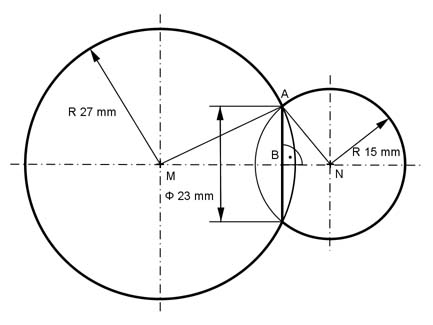

Aufgabe 393 Zwei Kugeln mit einem Radius von 27 mm und einem von 15 mm werden so abgeschliffen, dass sie eine gemeinsame Berührungsfläche mit einem Durchmesser von 23 mm haben. Wie groß sind die Volumina der beiden abgeschliffenen Segmente, kleineres zuerst?  Satz von Pythagoras im Dreieck MBA: MA = rKugel1 = 27 mm AB = 23 mm/2 = 11,5 mm MA² = AB² + MB² | -AB² MB² = MA² - AB² = 27² mm² - 11,5² mm² = 596,75 mm² |√ MB = 24,43 mm hKugelabschnitt1 = 27 mm - 24,43 mm = 2,57 mm л V1 = --- * hKugelabschnitt1² * (3 * rKugel1 - hKugelabschnitt1) 3 л V1 = --- * 2,57² * (3 * 27 - 2,57) mm³ = 542 mm³ 3 Satz von Pythagoras im Dreieck NAB: NA = rKugel2 = 15 mm AB = 23 mm/2 = 11,5 mm NA² = AB² + NB² | -AB² NB² = NA² - AB² = 15² mm² - 11,5² mm² = 92,75 mm² |√ NB = 9,63 mm hKugelabschnitt2 = 15 mm - 9,63 mm = 5,37 mm л V2 = --- * hKugelabschnitt2² * (3 * rKugel2 - hKugelabschnitt2) 3 л V2 = --- * 5,37² * (3 * 15 - 5,37) mm³ = 1 196 mm³ 3